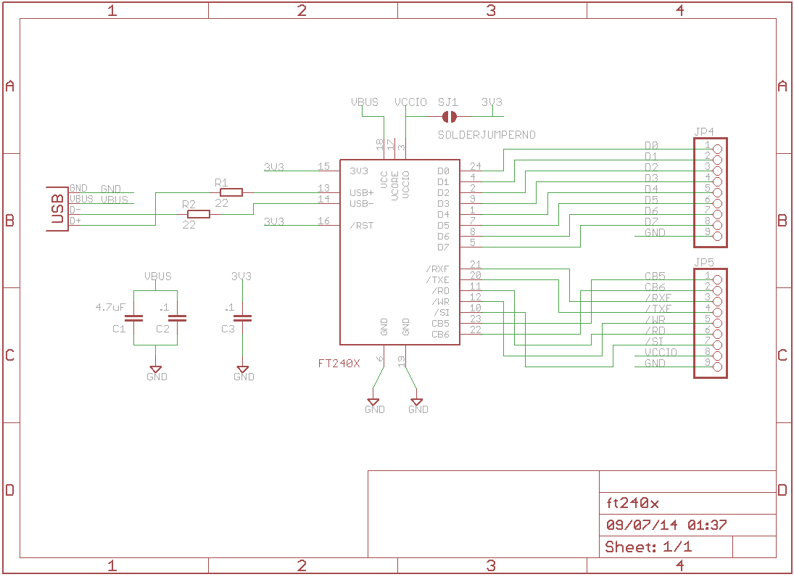
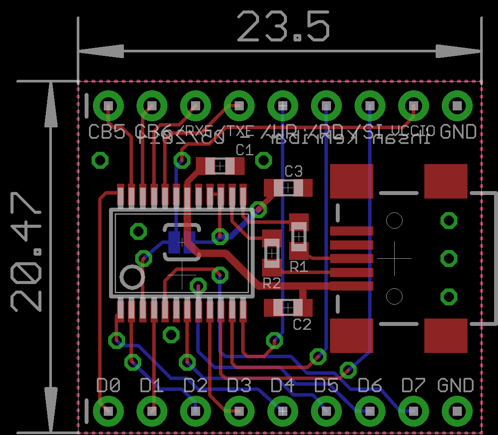
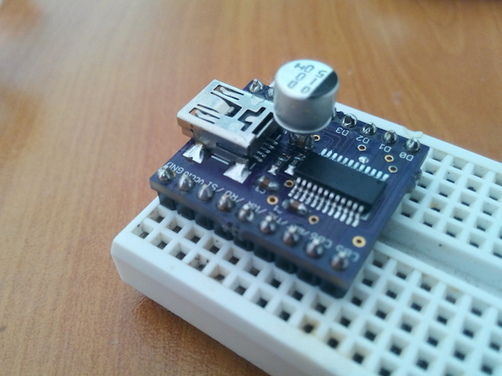

FT240x breakout board
FT240x is small and easy to use paralell FIFO - USB converter chip if you have enough I/O pins in your system. Computer side software development is easy since this chip appears as a basic serial port and you write your software as if you are using a standard USB to serial converter.
Hardware side is a little bit different. Since it is a FIFO chip, data you write doesn't appear directly at the data bus. You have to monitor 'RX FIFO Empty' signal and if it indicates there is an awaiting data, you need to pull those data from the FIFO by strobing /RD signal until RX FIFO signal indicates an empty FIFO. Also for the transmission, you need to monitor the "TX Full" signal and if it indicates there is room for a new byte in the TX Fifo you can send data to PC via strobing the /WR signal.
This chip is pretty useful for relatively fast data transfer between a FPGA / uC and a computer. I've tested the performance of this chip on a Linux netbook and seen transfer rates at around 1 Mbytes/sec. This is the small test program that I wrote for that purpose: https://github.com/kehribar/usbSerial_benchmark
For additional details you can read the datasheet: www.ftdichip.com/Support/Documents/DataSheets/ICs/DS_FT240X.pdf
Note: As you can see from the build photo, decoupling caps in the USB power line wasn't enough so that I had to add extra 10uF polarized cap. Beware when you look at the design and put proper decoupling caps in the power line in your design if you are going to build one for yourself.
Schematic

Layout

Build

Resources
License
This project is published under the terms of the GNU General Public License, version 3 licence.


{kind=link}
{kind=link}